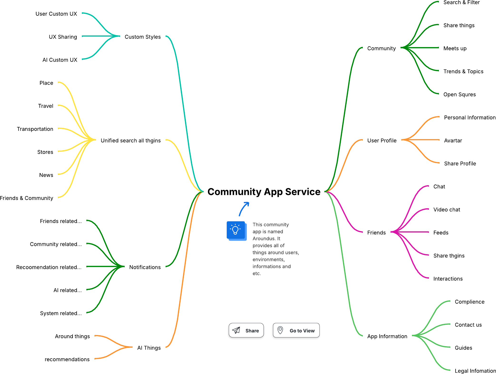
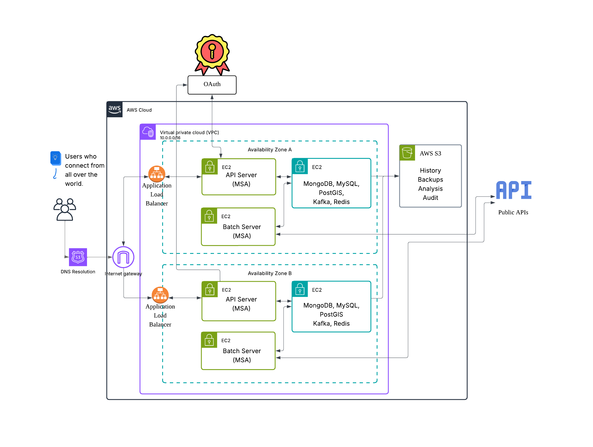

🌐 AroundUs: Community App Service
AroundUs is a modern, scalable community-based application platform built using Microservices Architecture (MSA). It connects users through local and interest-based communities, providing features such as location discovery, social networking, real-time chat, recommendations, and more.
📱 Project Overview
- React Native Mobile App – Cross-platform mobile frontend for iOS and Android.
- Node.js Express Microservices – A set of backend services managing distinct domains such as user profiles, posts, friends, notifications, and more.
- Dockerized Services – Each backend service is containerized for independent deployment and scaling.
- GitHub Actions CI/CD – Continuous Integration & Deployment workflows for both frontend and backend.
- Cloud-Ready – Designed to be deployed in Kubernetes or cloud environments with scalability and fault tolerance in mind.
🧩 Features & Service Domains

🟢 Community
- Share Posts & Things
- Search & Filter
- Meet-up, Topics, and Trends
- Open Community System
🔵 User Profile
- Avatar & Bio
- Personal Information
- Profile Sharing
🟣 Friends
- Friend List & Interactions
- Chat & Video Chat
- Shared Rights
🟡 Notifications
- Real-time alerts for events, friends, community news, and system events
- AI-Driven Suggestions
🟠 App Information
- Compliance, Contact, Legal
- Guides & Support
🧠 Categories & Community Topics
AroundUs supports a wide variety of interest-based communities such as:
- 🏘️ Local & Neighborhood
- 🍽️ Food & Drink
- 🎮 Hobbies & Interests
- 💪 Health & Wellness
- 🧑🤝🧑 Social & Meetups
- 🐶 Pets & Animals
- 🎓 Learning & Growth
- 💼 Buy, Sell & Trade
- 🌱 Eco & Sustainability
🏗️ System Architecture
AroundUs is built using a container-based microservices design:
- API Gateway – Unified entry point for clients
- Multiple App Servers – Dedicated Node.js microservices
- Independent Databases per Service – MongoDB, MySQL, Redis, Kafka
- CI/CD via GitHub Actions
- Optional Public APIs for 3rd-party integrations

📁 Project Structure
├── mobile-app/ # React Native frontend (iOS & Android)
├── services/ # Microservice backend components
├── README.md # Root README🧩 Microservices Breakdown
- ai-service/: Provides recommendation and personalization logic.
- analytics-service/: Tracks user activity and system metrics.
- auth-service/: Handles authentication, JWT tokens, and OAuth2.
- chat-service/: Manages chat rooms, real-time messaging, and video calls.
- feed-service/: Responsible for social feed generation and filtering.
- info-service/: Stores app-wide metadata, guides, and legal info.
- notification-service/: Sends push, email, and in-app notifications.
- search-service/: Search engine for users, posts, tags, and local content.
- user-service/: Manages user profiles, avatars, and user settings.
- web-service/: Handles web dashboard or admin views if applicable.
📱 Mobile App Structure (React Native + Expo)
mobile-app/
├── components/ # Reusable UI components
├── constants/ # App-wide constant values
├── hooks/ # Custom React hooks
├── scripts/ # Build or deployment-related scripts
├── proxy-*.js # Local dev proxy for backend
├── app.json # Expo config
├── tsconfig.json # TypeScript settings
├── server.crt/key # Local SSL certificates🛠️ Tech Stack
- Frontend: React Native, Expo, TypeScript
- Backend: Node.js, Express, MongoDB, Redis, Kafka
- DevOps: Docker, Docker Compose, GitHub Actions
- Cloud Ready: K8s, AWS S3, Load Balancer, API Gateway
🚀 Getting Started
Each microservice lives under the services/ directory and includes:
- Dockerfile
- package.json
- src/ directory
Run Locally (with Docker Compose)
docker-compose up --buildBackend
cd services/
docker-compose up --buildMobile App
cd mobile-app/
npm install
npx expo start